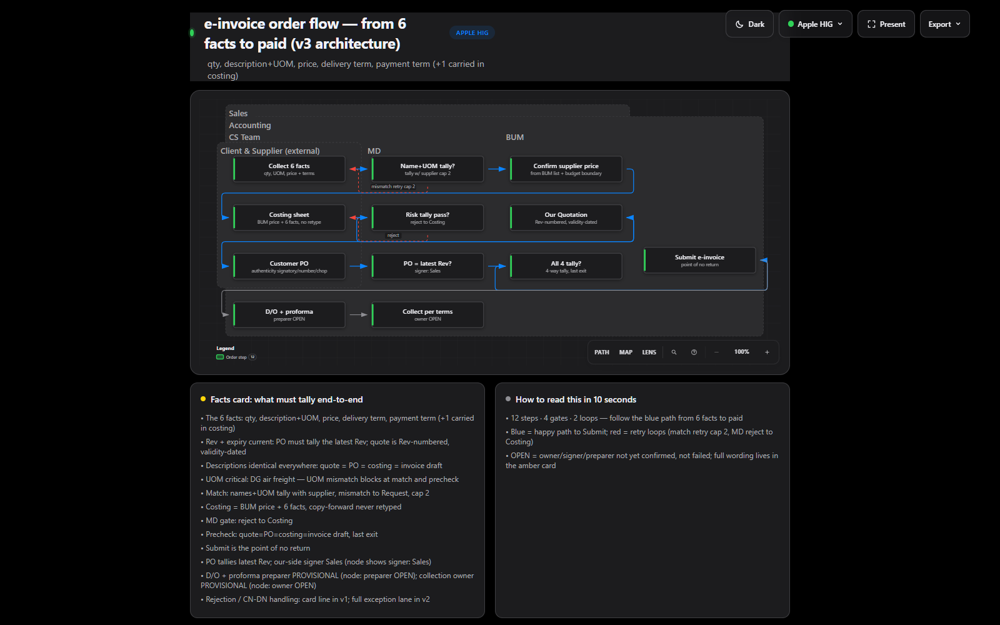
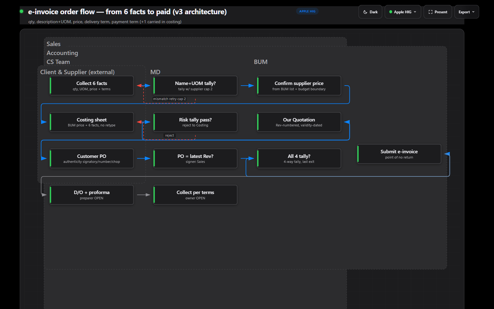

Session OSM-SEE-016, 2026-09-17. BEFORE = pre-fix renders (WIP-tree renderer + pre-O3 template). AFTER = post-O3 renders (same renderer bytes incl. the SEE-015 line; only the preset layer changed). Fix attempt (sibling-frame spread) tried and cleanly reverted per the pre-committed stop rule — it moved crossing 4 -> 5 and thinned fills, so the AFTER files below are post-O3, pre-fix-geometry.
| chart | sha8 | A16 | crossings (names + areas px2) | A17 (frame = fill%) |
|---|---|---|---|---|
| sys003-einvoice (12c/13e/6f, apple-hig) | 8b7768fa | FAIL 4 | Sales x Accounting 177012; Sales x Client 50495.55; CS Team x Client 33613.91; Accounting x Client 50495.55 (+7 nested, e.g. Sales x CS Team 75147.31) | Sales 35.06 | CS Team 39.29 | BUM 36.6 | MD 46.85 | Accounting 29.28 | Client 41.27 — FAIL |
| sys003-org (8c/7e/0f, apple-hig) | 17f4415a | NA | <2 frames — no pairs | NA — no frame holds a card |
| web-app (10c/9e/2f, undeclared→classic) | 2e50594e | PASS 0 | nested: sg-api inside AWS Region 99482.17 (containment, not damage) | AWS Region 21.47 | sg-api 30.41 — FAIL |
| repo-grid (9c/8e/1f, undeclared→classic) | c365ba65 | NA | 1 frame — no pairs | skill package 25.51 — FAIL |
Full rows: before-table.json. 14 further *.architecture.json specs refuse under the SYS-003
authored-geometry ban (verbatim Authored geometry is banned (SYS-003)) — no silent bypass.
before/design-explore__sys003-einvoice-structure.html
(sha8 8b7768fa) — capture of this exact file:

Plain words [Certain]: six dashed frames over 12 cards in 3 rows. The big Sales frame (top-left) and the big Accounting frame (stretched full-width) overlap across most of the canvas — A16 counts 4 crossings. The small BUM/MD/CS-Team frames sit inside both giants (nested, containment). The four pills Sales / Accounting / CS Team / Client pile verbatim on the top-left title rail — OPEN-21 confirmed, not fixed. Fill: Accounting holds all 12 card-centres but covers only 29.28% of its own area — the frame is mostly empty air.
File attempt/sys003-einvoice-spread.html (sha8 b37324c2), diff
attempt/spread.diff — capture of that exact file:

Plain words [Certain]: the same 12 cards unmoved; the frames ballooned — Accounting now swallows the whole canvas down past the legend, Sales stretched with it, titles still stacked top-left (OPEN-21 persists). Ruler: crossings 4 -> 5 (new CS Team x MD 66008.7; Sales x Accounting 177012 -> 644704.97), Sales fill 35.06 -> 16.81%, Accounting 29.28 -> 21.62%, A7 PASS -> FAIL (1.83 screens). Both must move right; both moved wrong — reverted. Renderer file restored to the WIP-tree bytes + the one SEE-015 line (1160 lines).
| chart | sha8 | A16 | A17 | geometry vs before |
|---|---|---|---|---|
| sys003-einvoice | 60f64185 | FAIL 4 (same pairs) | FAIL same % | cards/routes/frames byte-equal |
| sys003-org | bee97f55 | NA | NA | cards/routes/frames byte-equal |
| web-app | 3827b0fb | PASS nested | FAIL same % | cards/routes/frames byte-equal |
| repo-grid | 22b1fb67 | NA | FAIL same % | cards/routes/frames byte-equal |
Full-file sha differs ONLY by the preset layer (style block, preset menu, preset attrs). Hash pairs:
hash-pairs.json. Per-chart captures post-O3 were not re-clipped (geometry proven equal card-by-card);
the before PNGs above are the pixel record.
Census (live, 18 specs): editorial 0 users; signal-flow 4; blueprint 3; apple-hig 3; classic-original 0; classic explicit 0 + every undeclared chart stamped classic via cli.mjs:64. Token diff vs default: all three 0/0 (dark/light). Editorial removed wholly (template 0 hits, 5 schemas, validators regenerated, docs updated). Signal-flow + blueprint theme blocks emptied to default-aliases (names resolve, zero tokens, no colour changed). Classic ruled DOCUMENTED-AS-DEFAULT (kept, no own block — it IS the :root fallback). apple-hig + classic-original untouched.